Farm Analysis for Lactating Cattle Optimization – Nippon Model
このガイドを読めば、今日から繁殖検診が始められます。
最初の一歩。農場データの「入れ物」を作ります。
restart_falcon.bat をダブルクリック（またはデスクトップのFALCONアイコン）して起動します。
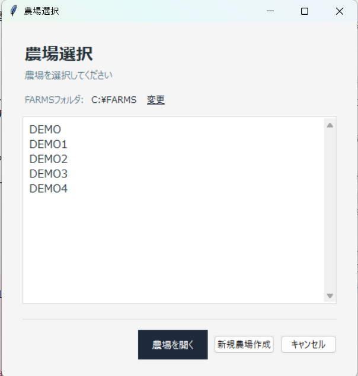
画面イメージ①：起動直後の農場選択画面
「新規農場を作成」ボタンをクリックすると、ウィザードが起動します。
牛を登録することで、すべての管理が始まります。
農場を開くと、左側にサイドメニュー、右側にメイン表示エリアが表示されます。
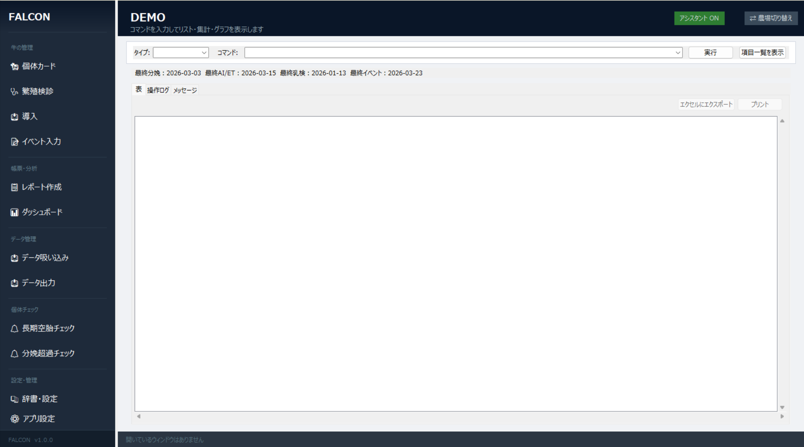
画面イメージ②：メイン画面の構成
新しい個体を1頭ずつ登録するときは、サイドメニュー「牛の管理 → 導入」を開きます。
個体カードに「＋新規登録」のような操作はありません。個体カードは既存の牛の一覧・閲覧やイベント入力に使います。
| 入力項目 | 説明 |
|---|---|
| 導入日・登録日 | 農場に入った日、繁殖指標の起点日（登録日が空欄のときは導入日に合わせます） |
| JPN10（10桁） | 個体識別耳標の番号。先に入力します。 |
| ID（自動） | JPN10を入力すると、正式10桁のうち拡大4桁に相当する部分から農場内ID（4桁）が自動設定されます。 |
| TAG（タグ） | 任意。農場独自の管理番号（耳番など）を付けたいときに使います。一覧・個体カードのタグと同じ項目です。 |
| 品種・生年月日 | わかれば入力 |
| 産次（lact） | 0＝未経産、1以上＝経産牛。繁殖検診・妊娠率に直結する重要項目。 |
| 分娩月日・最終授精日・授精回数・受胎の有無・PEN など | わかる範囲で入力すると、導入直後から繁殖管理が正しく動きます |
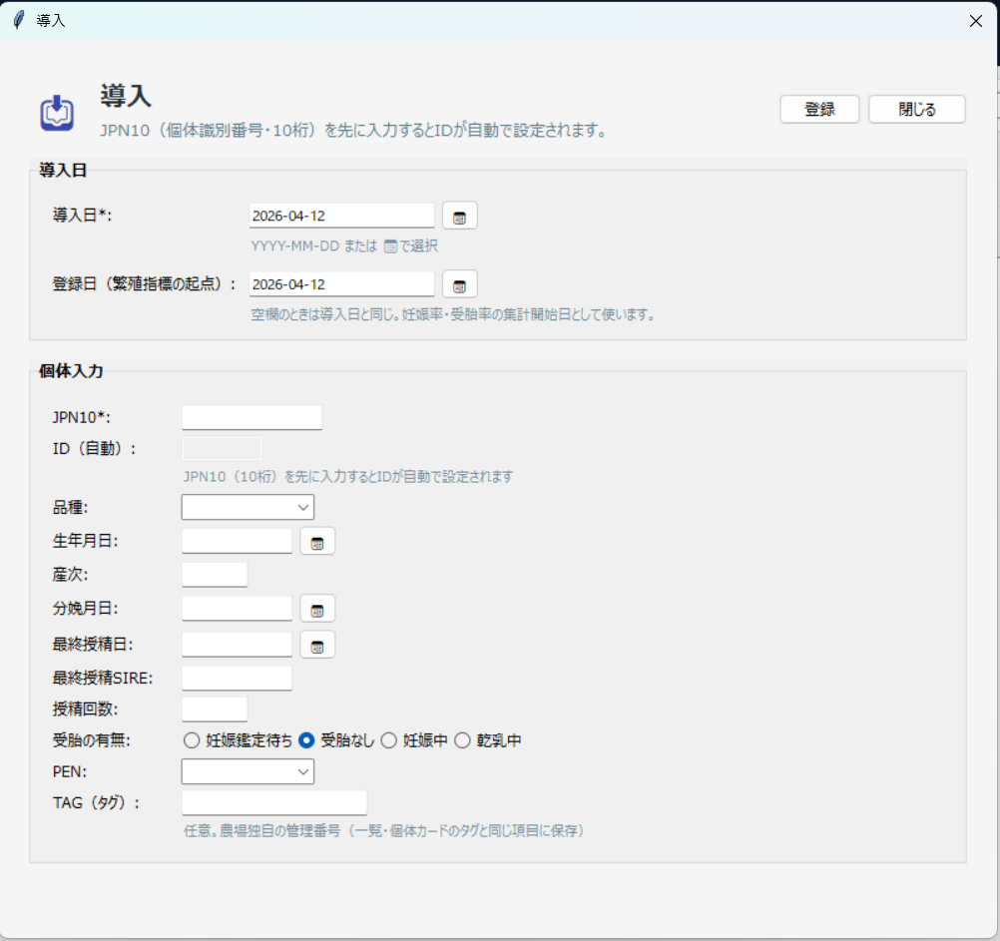
画面イメージ③：導入入力画面
分娩・授精・妊娠鑑定など、牛に起きた出来事を記録します。
config_default/event_dictionary.json）で確認してください。| 番号 | 略称 | イベント名 | カテゴリ |
|---|---|---|---|
| 200 | AI | 人工授精 | 繁殖 |
| 201 | ET | 受精卵移植 | 繁殖 |
| 202 | CALV | 分娩 | 分娩 |
| 203 | DRY | 乾乳 | 管理 |
| 204 | STOPR | 繁殖停止 | 管理 |
| 205 | SOLD | 売却 | 管理 |
| 206 | DEAD | 死亡・廃用 | 管理 |
| 208 | BLV | BLV検査結果 | 健康 |
| 302 | PDN | 妊娠鑑定マイナス | 繁殖 |
| 303 | PDP | 妊娠鑑定プラス | 繁殖 |
| 304 | PDP2 | 妊娠鑑定プラス（直近以外） | 繁殖 |
| 305 | ABRT | 流産 | 繁殖 |
| 306 | PAGN | PAGマイナス | 繁殖 |
| 307 | PAGP | PAGプラス | 繁殖 |
| 601 | MILK_TEST | 乳検 | 乳検 |
| 611 | MOVE | 群変更（PEN移動） | 管理 |
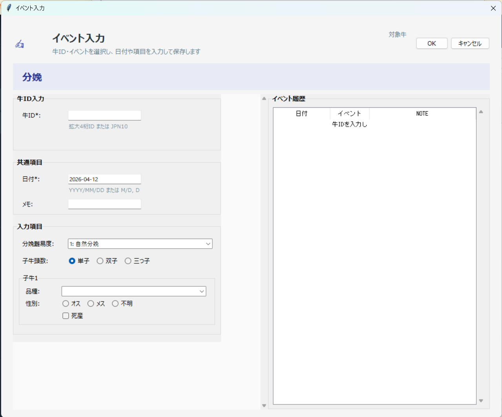
画面イメージ④：分娩イベント入力
| 入力項目 | 選択肢 |
|---|---|
| 分娩難易度 | 1:自然分娩 / 2:介助 / 3:難産 / 4:獣医師による難産 / 5:帝王切開 |
| 双子チェック | 双子の場合はON |
| 子牛性別 | ♀ / ♂（子牛ごとに選択） |
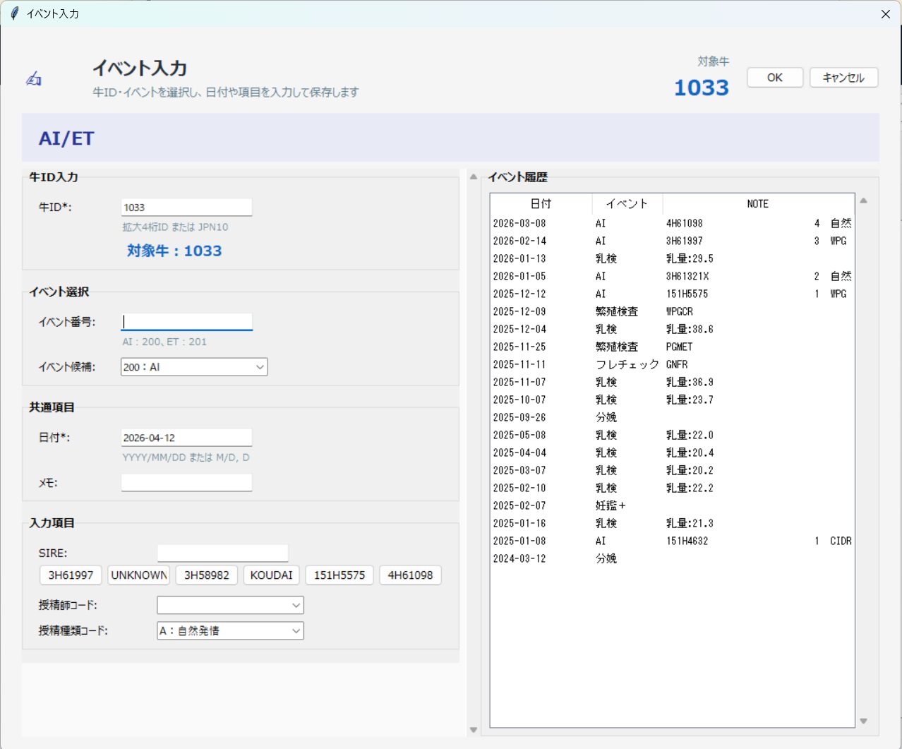
画面イメージ⑤：AI入力
| 入力項目 | 説明 |
|---|---|
| 授精師 | 「農場設定 → 授精設定」で登録したコードから選択 |
| 授精種類 | 自然発情 / CIDR / OvSynch 等（種類コードは英字。事前に「授精設定」で登録） |
| 精液（種雄牛） | 省略可 |
直近のAIが受胎した場合に使います（最も一般的な妊娠鑑定プラス）。
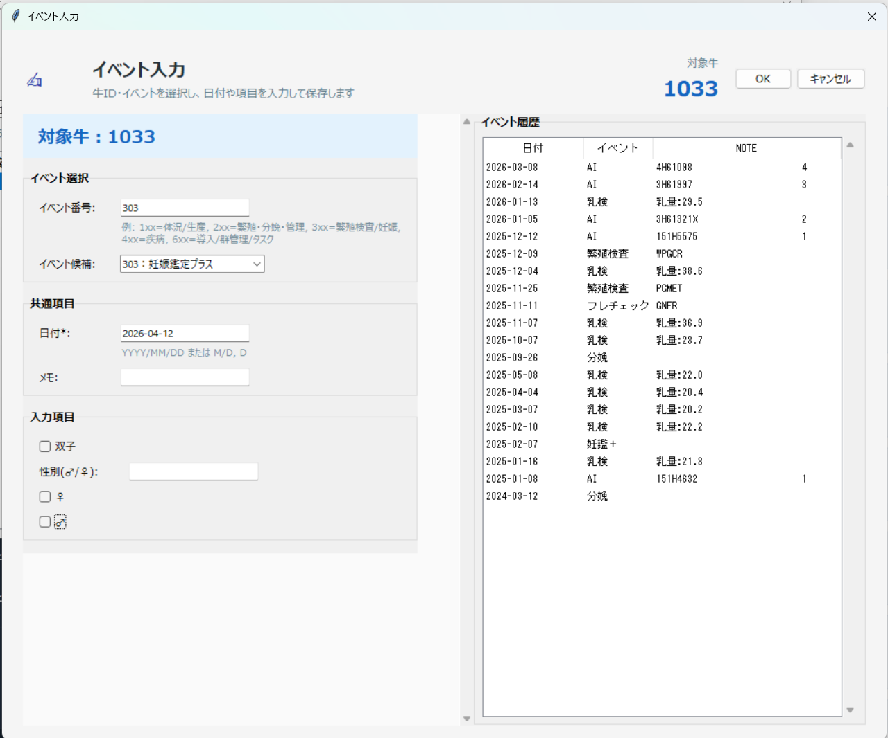
画面イメージ⑥：妊娠鑑定プラス（PDP）
直近のAIではなく、それより前のAIが受胎していた場合に使います。
例：「ひとつ前のAIで実は妊娠していた」
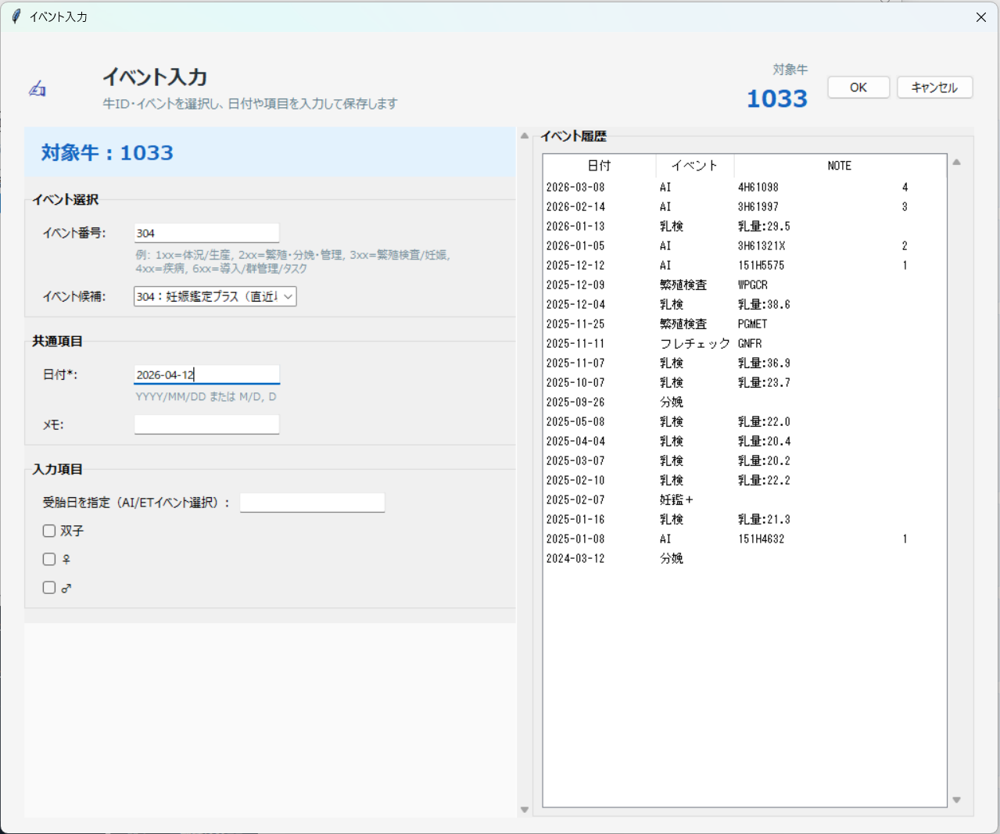
画面イメージ⑦：妊娠鑑定プラス（直近以外）
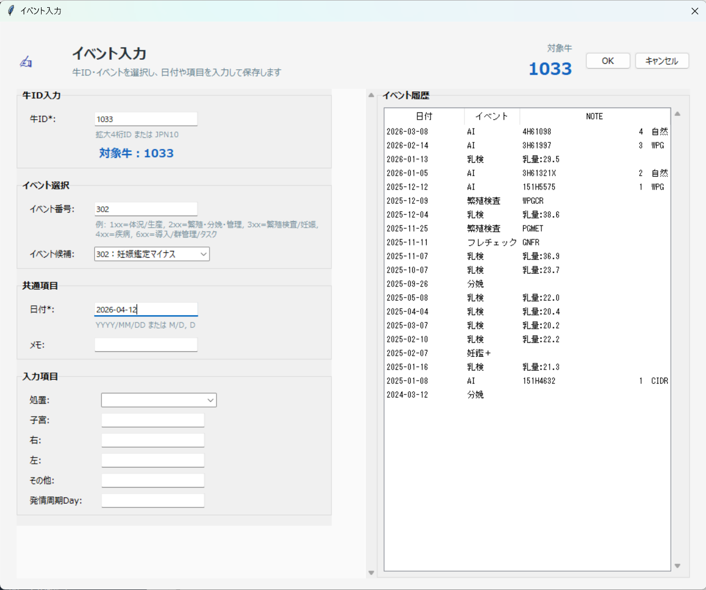
画面イメージ⑧：妊娠鑑定マイナス（PDN）
PAG（妊娠関連タンパク質）血液検査の結果を記録します。
| イベント | 入力項目 |
|---|---|
| PAGプラス（307） | 性別（♀/♂、わかれば）、双子チェック |
| PAGマイナス（306） | なし（日付のみ） |
| イベント | 効果 |
|---|---|
| 繁殖停止 STOPR（204） | 繁殖コード「1：繁殖停止」となり、繁殖検診対象から外れる。AIを入力するかSTOPRを取り消すと解除。 |
| 売却 SOLD（205） | 牛群から除籍。個体カードが赤く表示される。繁殖検診・妊娠率の計算対象外。 |
| 死亡・廃用 DEAD（206） | 同上。 |
設定をしないと繁殖検診は始められません。まず最初に行いましょう。
画面イメージ⑨：農場設定メニュー
| コード | 授精師名（例） |
|---|---|
| 1 | 佐藤 |
| 2 | 山田 |
| コード | 授精種類名（例） |
|---|---|
| A | 自然発情 |
| B | OvSynch |
| C | CIDR |
授精師のコードは数字でも構いません。授精種類のコードは半角英字のみ（数字不可）です。混同に注意してください。
群（PEN）のコードと表示名を登録します。
| コード | PEN名（例） |
|---|---|
| 1 | Lactating 1 |
| 2 | Lactating 2 |
| 3 | Dry |
| 4 | Heifer |
各検診区分のON/OFFと日数閾値を設定します。
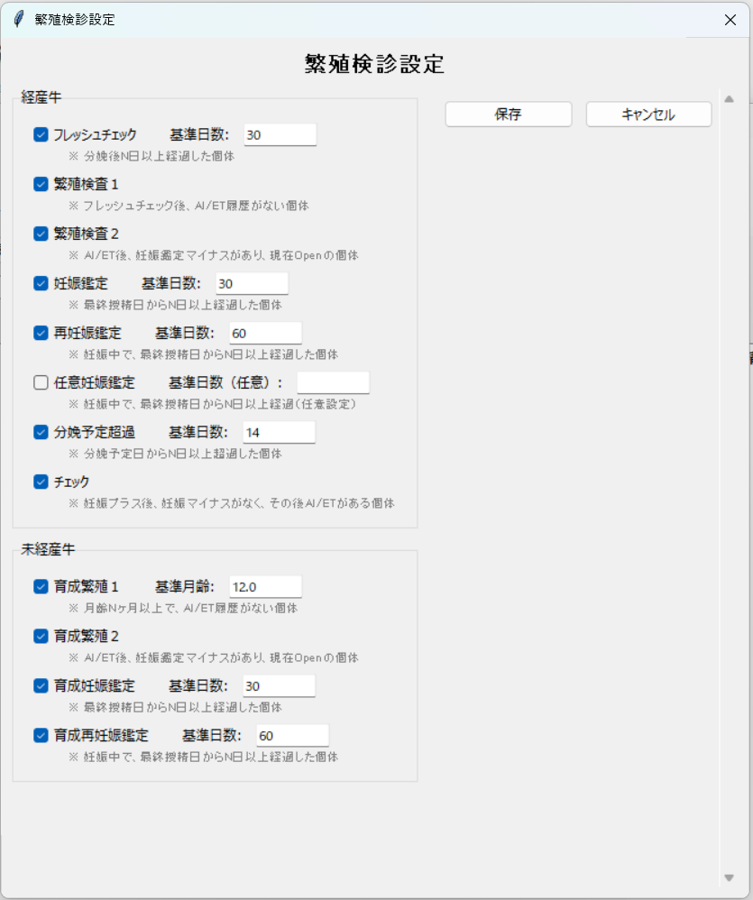
画面イメージ⑩：繁殖検診設定
| 検診区分 | 対象牛の条件 |
|---|---|
| フレッシュチェック | 分娩後N日以上経過し、まだ検診を受けていない牛 |
| 繁殖検査１ | フレッシュ後、AI/ET歴がない牛 |
| 繁殖検査２ | AI後に妊娠鑑定マイナスがあり、現在オープンの牛 |
| 妊娠鑑定 | 最終授精からN日以上経過した牛 |
| 再妊娠鑑定 | 妊娠中で、最終授精からN日以上経過した牛 |
| 分娩予定超過 | 分娩予定日からN日以上超過した牛 |
| 育成繁殖１ | 月齢N以上でAI歴なし（未経産牛） |
繁殖検診で使う「処置プログラム」を定義します。各処置には「コード」「名前」「薬品プロトコル」を設定します。
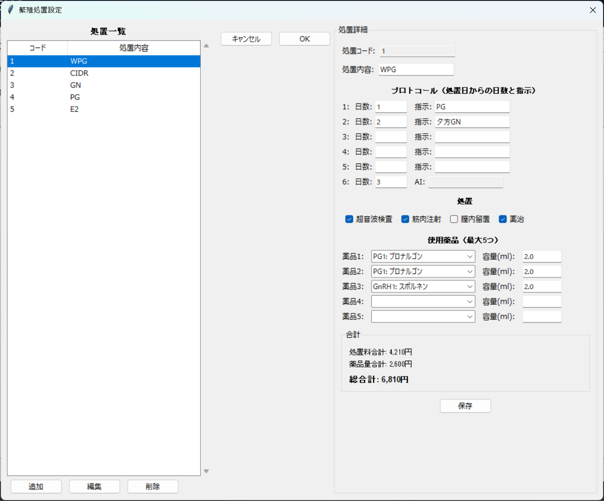
画面イメージ⑩-1：繁殖処置設定（処置一覧・プロトコル・使用薬品）
| コード（例） | 処置名 | 使用薬品 |
|---|---|---|
| 1 | WPG | PG注射 |
| 2 | CIDR | 膣内留置 + GnRH |
| 3 | OvSynch | GnRH → PG → GnRH |
繁殖処置で使用する薬品の製品名と単価を登録します。
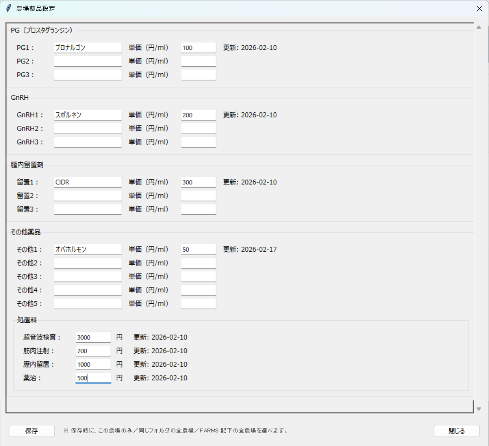
画面イメージ⑩-2：農場薬品設定（PG・GnRH・処置料）
| カテゴリ | 登録例 | 最大数 |
|---|---|---|
| PG製剤 | エストラメート、プロネスト | 3種 |
| GnRH製剤 | ファーティレリン、コンセラール | 3種 |
| 膣内留置製剤 | CIDR、PRID | 3種 |
| その他 | 任意薬品 | 5種 |
| 処置料 | 超音波検査、筋肉注射、膣内留置、薬治 | 各1 |
農場の目標値を設定します。ダッシュボードグラフに「目標ライン」として表示されます。
獣医師の方へ。繁殖検診の流れをステップで解説します。
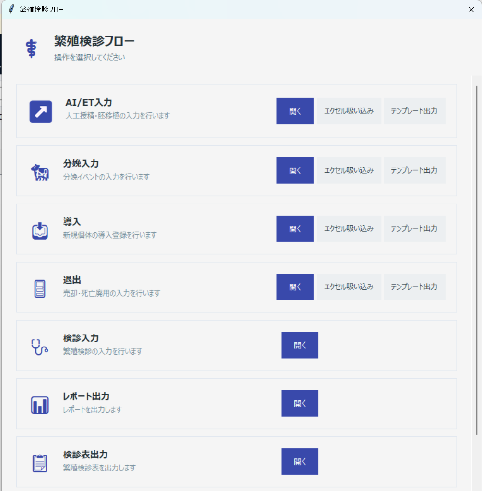
画面イメージ⑪：繁殖検診フロー画面
「繁殖検診表」→「開く」をクリックします。設定した日数閾値に基づき、今日の検診対象牛が一覧で表示されます。
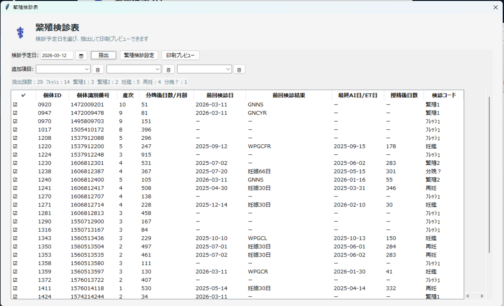
画面イメージ⑫：繁殖検診表（一覧）
| 列 | 見方 |
|---|---|
| DIM | 分娩後日数（自動計算） |
| 繁殖コード | 現在の繁殖状態（分娩後・空胎・授精後・妊娠中 等） |
| 検診区分 | 今日何をすべきか（フレッシュ・繁殖検査１・妊娠鑑定 等） |
「繁殖検診入力」→「開く」→ 検診日を入力して「抽出」ボタンを押します。対象牛が一覧表示されます。
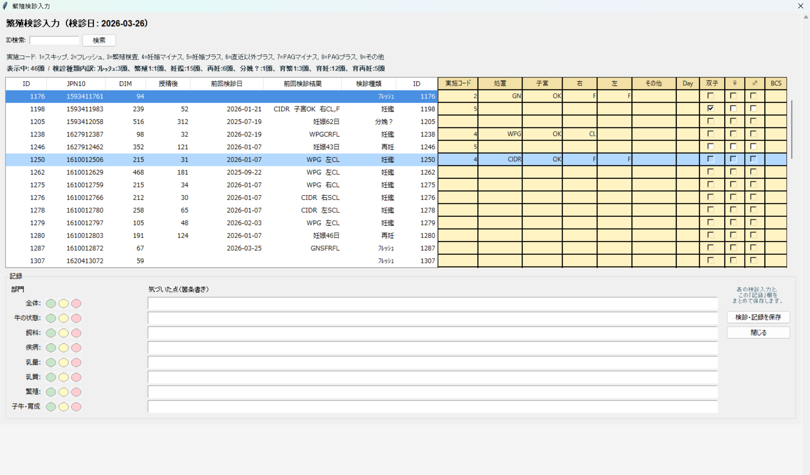
画面イメージ⑬：繁殖検診入力画面
| コード | 意味 | 使うタイミング |
|---|---|---|
| 2 | フレッシュチェック | フレッシュ区分の牛を検診 |
| 3 | 繁殖検査実施 | 繁殖検査１・２の牛を検診 |
| 4 | 妊娠鑑定マイナス（PDN） | 妊娠していなかった |
| 5 | 妊娠鑑定プラス（直近AI） | 直近のAIで妊娠確認 |
| 6 | 妊娠鑑定プラス（直近以外） | 以前のAIで妊娠確認 |
| 7 | PAGマイナス | PAG検査で陰性 |
| 8 | PAGプラス | PAG検査で陽性（妊娠確認） |
「レポート出力」→「開く」→ ダイアログで検診日を指定し、「繁殖レポート」にチェックを入れてOKを押します。ブラウザにHTMLレポートが開きます。「集計」ボタンはありません。
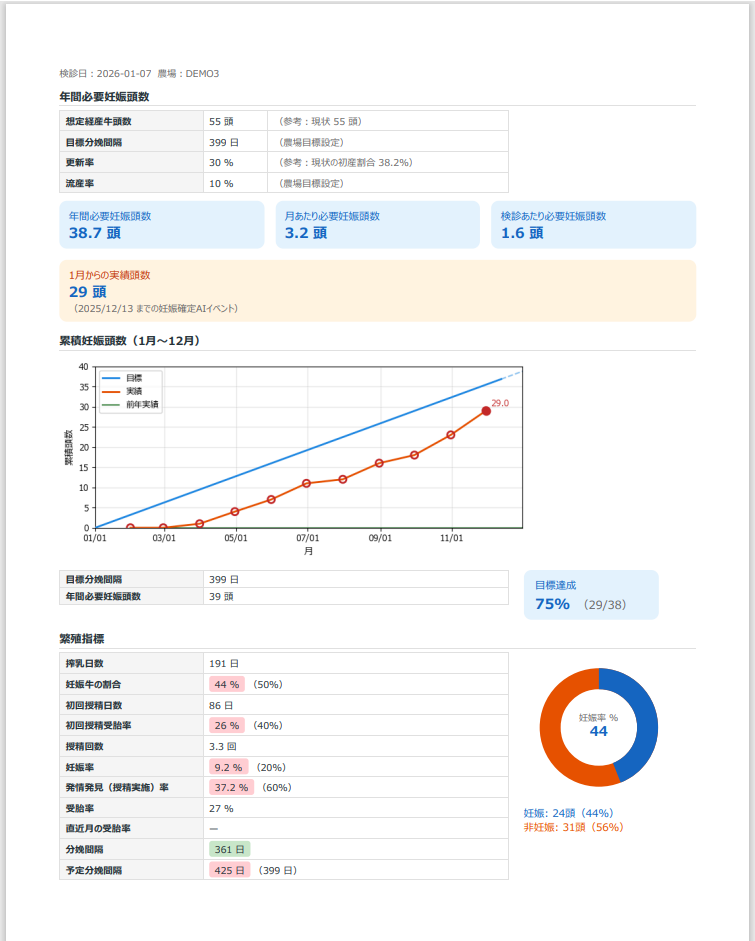
画面イメージ⑭：繁殖検診レポート
| 指標 | 見方・目標 |
|---|---|
| 妊娠率（21日PR） | 21日サイクルごとに妊娠した割合。目標20%以上。 |
| 受胎率 | AIした牛のうち妊娠した割合。目標40%以上。 |
| 授精実施率 | 繁殖対象牛のうちAIされた割合。目標60%以上。 |
| 種類別受胎率 | プログラム別の効果比較。 |
妊娠率（21日PR）＝ 受胎率 × 授精実施率
▸ 授精実施率が低い → 発情発見・タイミング同期の問題
▸ 受胎率が低い → 授精技術・牛の健康状態・栄養・熱ストレスの問題
レポートで「どちら」が引き下げているかを見極めることが改善への第一歩です。
牛群全体を俯瞰して、改善のヒントを見つけます。
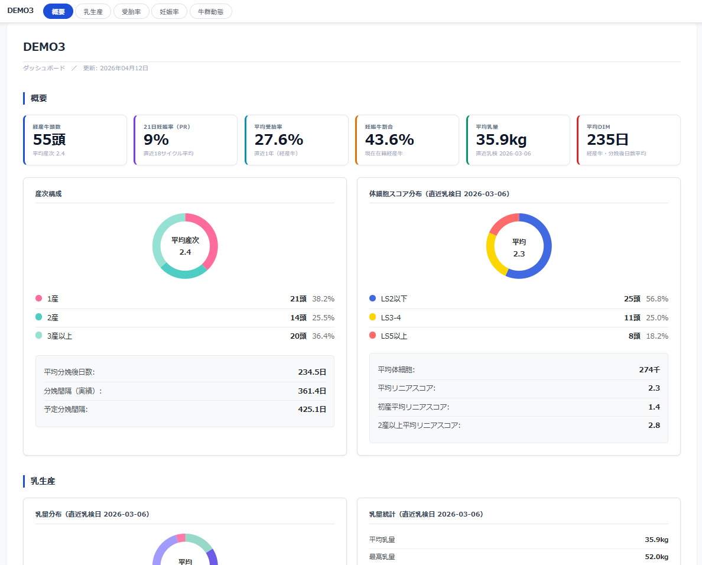
画面イメージ⑮：ダッシュボード
| 表示内容 | 意味・活用法 |
|---|---|
| 経産牛頭数・妊娠牛割合 | 牛群の概要を一目で把握 |
| 21日妊娠率グラフ | 18サイクル分の繁殖効率推移。右肩上がりなら改善中。 |
| 泌乳段階別頭数分布 | フレッシュ・ピーク・後期・乾乳のバランス確認 |
| 牛群動態（頭数推移） | 月ごとの導入数・除籍数・分娩数の棒グラフ |
繁殖管理以外の便利な機能をご紹介します。
このスケジュールに沿って進めれば、1週間で稼働できます。
よくある問題と解決策をまとめました。
| 症状 | 確認ポイント |
|---|---|
| 繁殖検診表に牛が出てこない | 繁殖検診設定で該当区分がONになっているか ／ 産次（lact）が正確か確認 |
| 妊娠率が計算されない | 経産牛（lact≥1）が登録されているか ／ サイクルが成立する期間のデータがあるか確認 |
| AIのプルダウンが空 | 農場設定 → 授精設定 で授精師・授精種類を登録する |
| 繁殖コードがおかしい | 個体カードのイベント履歴を確認し、入力ミスのあるイベントを修正する |
| DIM（分娩後日数）がゼロ／おかしい | 最終分娩イベント（CALV）が正しく登録されているか確認 |